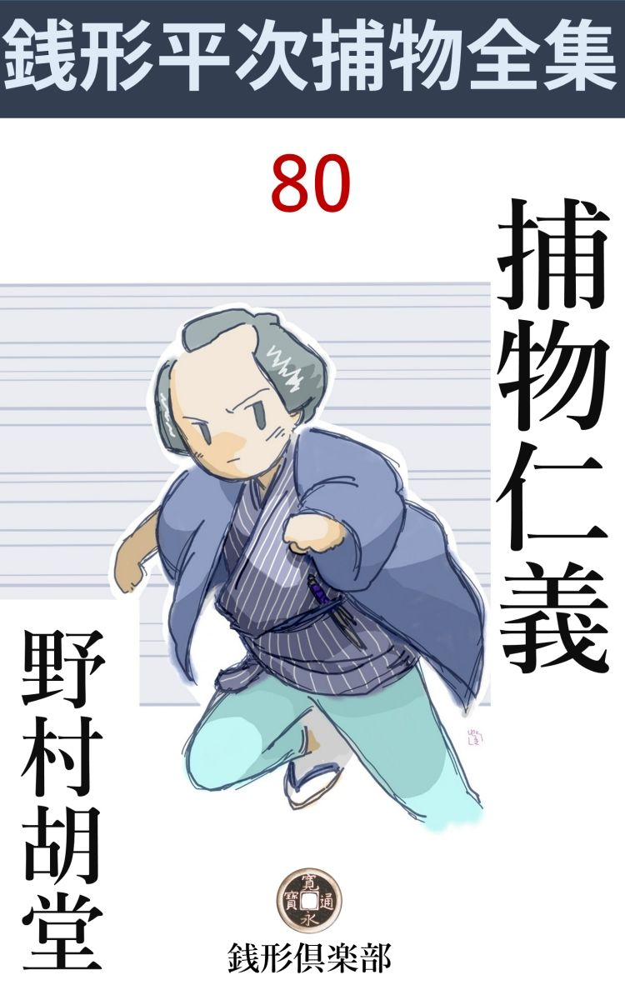

| 捕物仁義: 銭形平次捕物全集第80話 (銭形倶楽部) | |
| 野村胡堂 | |
| ZENIGATA CLUB (2018) | |

目次
捕物仁義
一
江戸開府以来といわれた、捕物の名人銭形平次の手柄のうちには、こんな不思議な事件もあったのです。------これは世に謂 う捕物ではないかも知れませんが、危険を孕 むことに於ては、冷たい詭 計 に終始した捕物などの比 ではないと言えるでしょう。
「親分ッ」
飛込んで来たのは、ガラッ八の八五郎でした。
「何というあわてようだ。犬を蹴飛ばして、ドブ板を跳ね返して、格子を外 して、------相変らず大変が跛足 馬 に乗って、関所破りでもしたというのかい」
平次は朝の陽ざしを避 けて、冷たい板敷をなつかしむように、縁側に腹ん這いになったまま、丹精甲斐のありそうもない植木棚を眺めて、煙草の煙を輪に吹いておりました。
「落着いてちゃいけねえ、いつもの大変とは大変が違うんだ、ね、親分、聞いておくんなさい」
「大層な意気込みだね、手前 の顔を見ていると、------一向大変栄えもしないが、一体どんなドンガラガンを持って来やがったんだ」
平次はまだ庭から眼を移そうともしません。この姿態 のまま、路地で犬を蹴飛ばしたことも、ドブ板をハネ返したことも、格子戸を外 したことも気が付いて居たのでしょう。
「親分、縄張内から謀叛人 が出たらどうします」
八五郎は息を弾ませながら、鼻の上の汗を平手で撫で上げました。
「何だと？------今の世の中にそんな馬鹿なことがあるものか。尤も、由比の正雪なら牛込榎町 よ、丸橋忠弥は本郷弓町だ、縄張違いだよ、八」
平次はまだこんな洒落を言っているのです。
「そんな昔話じゃねえ、謀叛人が生きていて、町内の銭湯で毎日銭形の親分と顔を合せるとしたら、どんなもんで」
「いやな事を言やがる、その謀叛人はいったい何処の誰なんだ」
「金沢町の素読 の師匠皆川半之丞」
「何だと」
平次は起き直りました。
一年ばかり前に引越して来た、浪人者皆川半之丞、美男で、人柄で、まだ三十そこそこの若さを、何をするでもなく、世捨人のように暮しているのが、銭形平次の第六感に、何かの印象を留めずにはいなかったのです。
「ね、親分、そう聞くと思い当るでしょう。子供は嫌いだからと言って、寺 子 は皆な断わってしまった癖に、夜は大の男を四五人も集めて〝子曰 く〟の素読の稽古だ」
「------」
「それは不思議でないにしても、弟子は一人残らず他所 の者で、町内の若い者が束脩 を持って頼みに行くと、家が狭いとか、隙が無いとか、何とか彼 とか言って追っ払われる」
「フーム」
「そのくせ、弟子どもと一緒に夜更けまでゴトゴトやっているそうですよ。謀叛人でなきゃ、贋 金 造 り、そんなことじゃありませんか、親分」
ガラッ八の鼻は少しばかり蠢 めきます。この鼻がまた銭形平次に取っては、千里眼順風耳で、この上もない調法な武器だったのです。
「贋金造りにしちゃ、暮しが楽じゃない様子だ」
「だから、謀叛人、綺麗な顔はしているが、飛んだ大 伴 の黒 主 じゃありませんか」
「------」
「それに、あの妹のお京というのがあんまり綺麗過ぎますよ。妹だか女房だか知らないが、日中は二人家の中に引っ込んだ切り、滅多なことじゃ天 道 様 の下に顔も出さねえ」
「それが口惜しかったんだろう」
「へッ、お察しの通りと言いてえが、謀 叛 人 の妹に思いをかけちゃ、笠の台があぶねえ」
ガラッ八は平掌 でピシャリと自分の頸筋を叩いて、ペロリと舌を出しました。
「じゃ、どうしろと言うんだ。いくら十手捕縄を預るこちとらでも証拠も引っ掛りもない者を、いきなり縛るわけにも行くめえ」
「そこは親分の働きで------」
「馬鹿なことを言え」
「それに、あの家から、ときどき煙硝 の匂いがするそうですよ、隠し鉄砲は遠島だ。それだけでも何とかなりゃしませんか」
「待て待て、もう少し考えて見よう、うっかり手を付けて恥を掻いちゃならねえ」
平次も皆川半之丞兄妹の日頃の様子から、ようやく重大なものを感じた様子でした。
二
その晩、平次はガラッ八をつれて、皆川半之丞の浪宅を訪ねました。
「どなた様で？」
三つ指を突いて迎えたのは妹のお京、町内の若いのが、顔を一と目見るだけのことに、三晩湯屋の前を張っていたというピカピカする娘です。
何となく貧しげな木綿物ですが、折目の入った単衣 を着て、十九、二 十 歳 がせいぜいと思われる若さを、紅も白粉も抜きの、痛々しいほど無造作な髪形、------それから発散される素 朴 な美しさは、妙にうら悲しさを感じさせる種類のものでした。
「御町内の平次ですが、お目にかかって、お願い申し上げたいことがございます」
平次は精いっぱいの古文 真 宝 な顔をします。
「暫らくお待ちを------」
スーと引込む娘の後ろ姿、浅間な浪宅が御殿に見えて、裾を引いたお女中が、お奥へ行くような気がして、後ろの八五郎はツイ鼻の下を長くします。
「大したものだね、親分」
「しッ」
平次は袖を払いました。
間もなく二人は次の間に通されて、ぬるい茶を啜って待って居ると、
「平次殿ではないか------改まって、どんな用事だ」
主人 の皆川半之丞、煙ったい顔に、薄笑いを浮べて来ました。蒼白い顔と、華 奢 な身体を見ると、両刀は手 挾 んでも、武芸などとは縁の遠い男に見えますが、その代り眼の鋭い、鼻の高い、細面の唇のよく締った、いかにも知恵と意志を思わせる顔立ちです。
浪人者と言っても、まだ三十そこそこ、よく湯屋や往来で見かけて、目礼を交 す顔ですが、鈍い行燈の灯 に対して、平次は改めて自分の観察を整理しました。
「外じゃございませんが、一人弟子に取って頂きたい人間がございますが------」
「はて？」
「この野郎でございますよ。御存じでしょうか、八五郎というんで。世間並のような顔をしていますが、からっきし訳の解らねえ人間で、------こんな野郎でも、〝子曰 く〟をちょっぴり教えて頂いたら少しは人間らしくなろうかと、こう思いましたんで、へエ------」
平次は後ろの方ですっかりむくれているガラッ八の顔を尻目に、こんな調子で頼み込むのでした。
「それは困るな、私は新しい弟子を取らないことにして居るんだが」
「でも、ございましょうが------」
「今来ているのは、みな三年越しの弟子ばかり、引越して行く先々へ跟 いて来るから、断わるにも断わり切れない」
皆川半之丞はまったく困じ果てた様子です。
「そう仰しゃらずに同町内の誼 み、御面倒でもございましょうが、人一人目鼻を明けてやって下さい。なア、八、手前 からもよくお願いをしな」
「へエ------」
八五郎は、モゾモゾと頸筋を掻きました。あまり、子曰くに気の乗る顔ではありません。
皆川半之丞は、再三再四ことわりましたが、平次はそれに押っ冠せて、根気よく、頼み込み、とうとう半刻ほど経った頃、
「それでは、二三日来て見なさるがいい。最初から大学や孝経でもあるまいから、庭 訓 往来でもやりましょう」
皆川半之丞の方から折れてしまいました。
「こうなりゃ、何だって構やしません。庭訓往来なんてケチな事をいわずに、阿 呆 陀 羅 経 でも何でもやっておくんなさい」
ガラッ八は、殺さば殺せといった調子でした。
「馬鹿野郎、阿呆陀羅経って、奴があるか、------こんな解らない野郎でございます、何分よろしく願います」
平次は、一所懸命に頼み込んで、マゴマゴするガラッ八を促 し、いずれ稽古は明日の晩から、と言うことにして引揚げました。
「驚いたぜ、親分」
外へ出ると、ガラッ八は精いっぱいの酢っぱい顔をして見せるのです。
「驚くことがあるものか、いい序 だ、しっかり学問をして置くがいい」
「学問は気が乗らねえが、------あの娘は毎晩顔を見せるかしら？」
「馬鹿野郎」
「そんな役得でもなきゃ、十手捕縄御返上だ。〝子曰く〟なんか持薬にするような、悪い病 はねえ」
「黙らないかよ、------呆れた野郎だ」
二人はしばらく黙って歩きました。いつの間にやら、皆川半之丞の浪宅を含 む街の一角を、月に浮れたように一と廻りしていたのです。
「右隣は長崎屋幸右衛門、左は川岸だ」
平次は皆川半之丞の浪宅を押し潰しそうに、街の四分の一を占めて聳 ゆる、御金御用達兼神田両替組頭、長崎屋幸右衛門の豪勢な家を振り仰ぎました。
「長崎屋のお喜多も十九だが、------あの娘と比 べちゃお月様とすっぽんだ」
ガラッ八は外の事を考えております。
「そう言ったものじゃあるめえ、お喜多も町内で五本の指に折られる娘だ、------あの娘が少し綺麗過ぎるんだよ」
「へッ、娘やお月様は綺麗過ぎたって腹の立つものじゃねえ」
「何を下らない、------ところで、あの皆川兄妹に逢って、何か気の付いたことはなかったかい」
平次は自分の家の方へ足を向けながら、軽い調子で問いかけました。
「二人ともいやにお上品で綺麗だという外にはね、------同じ武家でも、あんなのは、舞台へ出て来る武家のようじゃありませんか」
「それにしちゃ、手が荒れているとは思わなかったかい、八」
平次は大変なところへ眼をつけていたのです。
「貧乏な浪人暮しで、下女も飯 炊 きも置かなきゃ、娘の手も荒れるでしょうよ」
ガラッ八は少しばかりセンチメンタルになりました。
「娘はそれで解るとして、------あの主人の手はどうだ、ありゃ武家や町人の手じゃねえ、百姓か職人の手だ」
「------」
「いろいろ面白いことがありそうだよ、少し当って見よう、------ところで、稽古の始まるまでまだまる一日あるわけだから、その前にあの兄妹の素姓と、近所の噂を聞いて置くとしよう。頼むぞ、八」
「へエ------」
八五郎は両手を揉 みました。相手が綺麗なだけに、何か武者顫い見たいなものを感じます。
三
「親分、驚いたの何のって------」
八五郎はまたドブ板を跳ね返して、飛込みました。
「俺の方が驚くよ、そう番毎格子を外 されちゃ」
平次は相変らず落着いて居ります。
「それどころじゃねえ、------今晩はどんな事があったと思いますッ」
「変な声を出すなよ、馬鹿だなア」
「あの皆川半之丞という、浪人者が教えてくれるかと思うと、大将は四五人の旧い弟子と奥の一と間に閉め切って立て籠り------」
「この温気 にか？」
「あっしの師匠は、へッ、へッ、妹のお京さんだ。教えて貰った書物はモーギューてんですぜ。へッ、へッ」
「大層むずかしいものをやりゃがったな。蒙求 は荷が勝ち過ぎるだろう、少しは覚えて来たか」
「いいえ」
八五郎はブルブルンと長い顎 を振りました。
「一つも覚えちゃ居ねえのか」
「へッ、お京さんの可愛らしい唇の動くのを見ていたんだ。ときどき書物から顔を挙げて、あっしの目と目が逢うと、ボーッとしたぜ」

「馬鹿野郎」
「空耳 で聞くんだから、モーギューだってヒヒンだって少しも驚かねえ」
「牛や馬の声じゃねえ、呆れた野郎だ、それっ切りか」
「これっ切りだった日にゃ、十手捕縄返上だ。ね、親分、モーギューは何にも覚えちゃいねえが、はばかりながら稼業の方はちゃんとやりましたよ」
ガラッ八は狭い単衣で膝っ小僧を包みながら乗出しました。
「何か聞出したのか」
「お隣の長崎屋------あの万両分限の箱入り娘お喜多が、皆川半之丞と仲がよくなったのを、長崎屋の主人幸右衛門が、貧乏浪人などは以ての外と、生 木 を割いたのを御存じですかい」
「いや知らねえ」
「銭形の親分も、情事 出入りには目が利かないネ」
「ふざけるな------探ったのはそれっ切りか」
「------」
「手前が妹に教わって、蒙求 を囀 ずる間、奥の一と間じゃ何をやったんだ」
「それが解らねえ、素読の声は愚か、人の話声も聞えませんや」
「呆れた野郎だ、娘の顔ばかり見ていたんだろう」
「尤も、人の歩く音や、重い物を引摺るような音は聞えたように思うが」
「それが謀叛 の証拠になるかも知れなかったんだ、何だって覗いて見ねえ」
「武士はそんな卑怯なことをするものじゃねえ------と言いたいが、実は娘が傍にひっ附いて、瞬 きする間も離れなかったんで、へッ、へッ」
ガラッ八は平 掌 で長い顎を逆撫でにして居ります。
「手の付けようがねえ、------今晩は是が非でも奥の一と間を見るんだ、いいか、八」
「へエ------」
「娘が側を離れなきゃ、仮病 を使うとか、調子が出なきゃ横っ腹を突き飛ばすとか------」
「誰ので？ 親分」
「手前 のを、手前の拳骨 でやるんだ、遠慮することはねえ」
「驚いたね」
「面食って娘の横っ腹などを突き飛ばすんじゃないぞ、馬鹿野郎ッ」
「ウ、へエ------、今日は馬鹿野郎の食傷 だ。ゆうべ夢見が悪かったよ」
ガラッ八は驚いて飛出しました。
「用心しろ、デレデレして居ると飛んだ目に逢わされるぞ」
平次の追っかける声に、ガラッ八はもう姿も見えません。昨夜の縮尻を取返して来る積りでしょう。
翌る日一日、平次は皆川半之丞の身許を調べました。最初は中国浪人という触れ込みだけ、何処の家中とも解らなかったのですが、やがて、皆川半之丞というのは偽名で、御 家 人 崩 れか、旗本の冷飯食いか、とにかく、江戸侍に相違ないことだけは、見当が付いたのでした。
皆川半之丞の家に集まる四五人は、本郷から下谷へかけての堅気の小商人か、小旗本の奉公人で、下っ引に調べさせると、それが一脈の筋を引いていることは解りましたが、たった一日の探 索 では、それ以上の事は見当も付きません。
こんな時は鼻のいいガラッ八でも居てくれると、大いに助かるわけですが、残念ながらそれも、からかい過ぎて寄り付かず、気をもみながら到頭三日目の夜になってしまいました。
「親分、皆川半之丞の家の横手に、こんなものが落ちて居ましたよ」
下っ引の一人が、小さい紙っ片を拾って来たのは、そのまた翌る夜の亥 刻 過ぎ。
「フーム」
それを読んだ平次は、煙管 の吸口を額に当てたまま、思わず唸りました。懐紙に、消炭でのたくらせた走り書きは、
親分、大変なことになったぜ、明日はきっと、鬼の首を取っ
て帰る、外まわりの土に気をつけて下さい------
間違いだらけの仮名文字、ガラッ八名題の悪筆に紛 れもありません。
四
それっ切りガラッ八は帰らなかったのです。皆川半之丞の浪宅へ、幾度 か使 をやりましたが、二晩稽古に来たっ切り、あとは顔を見せない------という素 気 ない挨拶です。
一方皆川半之丞のところに集まる四五人の弟子の身許を、一人一人虱潰 に調べさせた下っ引は、思いも寄らぬ不思議な事を聞込んで来ました。
黒門町から来るのは、小旗本某の用人、本郷三丁目から来るのは、以前旗本某に使われた小者、湯島から通う男は、旗本某の乳 母 だったという老女の伜。
「その旗本は何というんだ、愚図愚図しちゃ居られない、大急ぎで訊いて来い」
平次は日頃にも似ぬあせり ようです。下っ引を二三人、尻を蹴飛ばすように出してやった平次は、深々と腕を拱 いて考え込みました。若くてイキのいい平次が、こんな分別顔をするのは滅多にないことですが、三日消息を絶ったガラッ八の身の上に、何か重大な危険が、襲いかかって居るような気がして、さすがに不吉な予感に怯 え続けていたのでした。
事件の全貌 は、皆川半之丞の素姓が判りさえすれば、わけもなく見透せるような気がしますが、いくら浪人でも、歴 とした二本差を、証拠も何にもなしに縛るわけに行かず、寺に戸 籍 のあった時代では、簡単に前身や身分を洗う工夫もつかなかったのです。
併し、疑問を織り出して居る綾 糸 は、一箇所から繰り出されて居るような気もしないではありません。その大 本 を衝くことが出来さえすれば、何も彼も一ぺんにほぐれて行くのかも知れないのです。
少なくとも四方へ飛ばした下っ引が帰って来れば、何とか目鼻がつくでしょう。困ったことに、この二三日、皆川半之丞の家に、弟子達の集まる様子はなく、それを跟 けて、巣を突き止める手 段 もありませんが、暇にあかして詮索をしたら、疑問の旗本の名前位は捜り出せるかも知れないのでした。
（------ところで、土に気をつけろ------とは何のことだ）平次の胸にはガラッ八の下 手 な仮名文字が浮びました。
いくら考えたところで、この謎の文句ばかりは解りそうもありません。（これは矢張り、ガラッ八の手紙の通り、外廻りを見る方が早いかも知れない------）そう思い付いた平次は、人に顔を見られるのを憚 るように、翌る日の早朝、まだ街の往来のろくにない頃を選んで、皆川半之丞の小さい浪宅から、長崎屋の大きな構 、それにつづく自身番や、小商 いの店のあたりを当てもなくグルグルと廻りました。
「おや？」
妙なものが、平次の注意を捉えました。踏み堅めた往来へ、ボロボロとこぼれている、真黒な土です。つまみ上げて掌 で砕いて見ると、江戸の往来の馬 糞 と砂利をねり堅めたような土とは全く違ったもので、うんと空気を含んだ真っ黒な土くれですが、肥料の気 の少しもないところを見ると、八百屋や近在の百姓衆が、商売物の荷や草鞋 で運んで来た、田舎の土でないことも明かです。
土は点々として、川岸につづきました。崩れた石垣の上から覗くと、そこには苫 を掛けた船が一隻、人が居るとも見えず、上げ潮に揺られて、ユラユラと岸を嬲 って居ります。
「------」
平次は思わず声を出すところでした。船端 には、先刻、街で見付けたと同じような土が一ぱい、苫の中にも多分それが積み込んであることでしょう。もし、ガラッ八の手紙に書いてある〝土〟がこれを指すのだったら？ ------平次は思わず伸上って皆川半之丞の浪宅のあたりを見やりました。
視野を遮 ぎるのは長崎屋の巨大な棟 、------その下には、巨万の富を護るために抱えて置くという、二人の浪人者の住んでいる離室 も見えます。
五
その時でした。急に街の空気が騒がしくなったと思う間もなく、
「親分、大変ッ、------殺されましたよ」
下っ引の勝が飛んで来ました。鋳掛 勝 という中年男で、乾し固めたような小さい身体ですが、ガラッ八などよりは物事が敏捷に運びます。
「誰が殺されたんだ？」
「浪人者の妹ですよ、------お京さんと言った、滅法 綺麗なのが------」
「えッ」
平次は飛上がりました。岡っ引として異常な事件に臨む緊張というよりは、女の児が、美しい人形を取落して、微 塵 に砕いた時の心持です。
二人は宙を飛びました。皆川の浪宅では、
「お、平次殿」
さすがに、真っ蒼になった主人の半之丞が迎えてくれます。
「お妹様が御災難だそうで------」
「見てくれ、平次殿」
皆川半之丞の案内で裏へ廻ると、狭い庭の植込の蔭に、さしも美しかったお京は、紅 絹 の一と束のように、碧 血 に染んでこと切れて居るのです。
「これは？」
平次もさすがに胸が塞がりました。血を失い尽して、真っ白になった小さい顔は、打ち砕かれた人形のような、この世のものとも思えぬ冷たく美しいものです。傷は後ろから浴衣 越しに突いた一と太刀、左乳の下へ突き抜けるほどの凄まじいもの。
「お心当りは、皆川様」
「何にもない------」
半之丞は固く口を緘 みました。
「血の凝 まった様子では夜中前のようですが」
「そうかも知れない、が、私は早寝だから、何にも知らなかった。------今朝起きて見ると、縁側の戸は開けたまま、朝陽がさし込んで居たが、多分、妹が朝の支度でもして居る事と思い込んで、うっかり時刻を過してしまった」
そう言う皆川半之丞の顔には、夕立雲のように深刻な悲しみが去来します。
「人に怨 まれるようなお心当りは？」
「無い」
半之丞の調子は少し剣もホロロです。
「そう申しては何ですが、------御妹様はこの御きりょうで、さぞ何彼と言う人も多いことでございましょう、殿方とのお噂などは？」
「飛んでもない、妹に限って、そんな馬鹿なことがあるわけはない」
半之丞の口調は激越 でした。言い知れぬ忿怒が、サッとその秀麗な顔を染めるのでした。
「もう一つ伺いますが、御妹様は、旦那と本当の御兄妹でしょうか」
「ウム」
気むずかしくうなずく半之丞を、平次はもう追及する気もない様子です。
「恐れ入りますが、お家の中の様子を見せて頂きます」
「それは------」
引留めそうにする皆川半之丞の様子に構わず、平次はもう縁側から上がって居りました。入口の三畳、それに隣る六畳は、いつかガラッ八と一緒に通された部屋。そこにお京の床は紅い木綿の裏を見せて、淋しく敷き捨てたまま、枕の脹 らみ具合では、一度も寝なかったことが一と目で解ります。
その奥の部屋は、皆川半之丞が特別な弟子達を通す場所でしょう。主人の不満も、知らぬ顔に、平次の手はサッと唐紙を開けました。
そこは六畳のよく片附いた部屋。平次が期待したようなものは何にもなく、主人半之丞の床が、部屋の隅に片寄せて、ザッと積んであるだけです。
平次もさすがにそれ以上は遠慮しなければなりませんでした。縁側に立って見ると、裏木戸へ通ずる庭がよく踏 み堅められて、苔 一つ無いのが不思議と言えば不思議です。それよりも平次の眼を驚かしたのは、狭い庭のあちこちに、撒 いたように散っている一種の土くれでした。
この家の中をもっとよく捜したら？ 平次は、そんな事を考えて居りましたが、庭の死体もそのままにして、さすがに家探しもなり兼ねます。
「お知合の方へ人をやりましょうか、皆川様」
平次は見兼ねて注意しましたが、
「いや、江戸には格別の知合もない」
半之丞は、冷たく言い放って、妹の死体の側に、検屍 の済むのを待っている様子です。
大きな悲しみの去来する、この上もなく冷たい顔を、平次は世にも不思議なものに眺めて居りました。ひ弱い肉体と、逞 しい知恵とを持っているらしい、この皆川半之丞の秀麗な面から、秘密を観破することだけは平次も断念しなければならなかったでしょう。それは、平次が嘗 て経験したことのない、複雑な深さを持った顔です。
間もなく検屍が済んで、死体を部屋の中に運び入れ、町内の人達が、家主や月番を先に立てて、何くれと世話をしてくれました。が、不思議なことに、毎晩集って来た、半之丞の弟子達も、身寄りの者もたった一人も顔を見せません。
「皆川様、------番所までお越 しを願います」
思案に暮れた平次は、最後の切札 を投げました。たった半刻、この家から皆川半之丞を追い出して、存分に調べて見たかったのです。
「それは誰の指図だ」
半之丞の顔は冷たく引緊 ります。
「その方が早く型がつきます、------御奉行所の召出しを待って、何彼と手間取っては、御妹様の仇討も遅れる道理ではございませんか」
平次は一所懸命です。町奉行や、与力の指図を待っていては、平次の方も今日の日に間に合いません。そうかと言って、相手は身分あり気な二本差ですから、引っ括って行って、存分な家探しをするわけにも行かなかったのです。
「無用だ。------私は知っているだけの事は皆な言ってしまった」
「でも」
「私は葬 いの済まぬうちは、妹の死体を独りぽっちにしたくはない」
「でも、下手人 を挙げなきゃなりませんよ。敵を討たなきゃ、御妹様も浮ばれないというものでしょう」
「下手人を挙げさえすれば、この私に格別な用事はないのだな」
「それはもう、仰しゃる迄もありません」
平次も、ツイ斯う言い切ってしまいました。
「それなら一向わけはないではないか」
「？」
「下手人は解っている。名札を置いて行ったも同様だ」
「？」
「銭形の平次と言われる者が、これほどの事が解らない筈はない」
「------」
平次は眼を見張りました。恐ろしい挑戦 です。
「あれを見るがいい」
皆川半之丞の指さしたのは、お京の死骸の横たわっていた植込みの真上に冠 さる長崎屋の土塀でした。
飛んで行って見ると、その土塀の上の瓦 には、真夏の陽に乾いてベットリ血潮。
「------」
平次も今は一句もありません。皆川半之丞をここから追出して、ガラッ八の安否を確かめることに気を取られ、たったこれほどのことに気が付かなかったのです。
「昨夜妹を誘 き出した曲者は、長崎屋の庭で妹を殺害し塀越しに死骸を投げ込んだのだ。六尺の土塀の上に附いた血や、植込みの躑躅 の枝が折れて、生 湿 りの土に深く型の附いたのなどは、その証拠だ」
恐ろしい半之丞の明察、------平次はお株 を奪われてしばらく黙ってしまいました。が、やがて、心を落着けると、平次の日頃の叡 知 が蘇 えります。
「下手人は左利きの男、力はあるが武家ではありません」
と平次。
「その通りだ。さすがは平次殿、それに一点の間違いもあるまい。長崎屋へ行って、左利きの力の強い男を捜すがいい、下手人はそれだ。多分まだ刃物を持っているかも知れない」
「------」
皆川半之丞の言葉を後に聞いて、平次は長崎屋の裏口から真っ直ぐに乗り込んで行きました。
六
「何？ 岡っ引が入って来た？ 左利きの力の強い男がいないかと言うのか」
「それなら拙者だ、この伊坂 権内 、左利きの上に三人力だぞ」
長崎屋にゴロゴロしている浪人者が二人、事あれかしと裏口から飛んで出ました。
「お武家方じゃございません、奉公人のうちに、そんな人はいないでしょうか」
平次はおくれる色もありません。
「あったらどうする？」
と伊坂権内。
「番所まで来て貰います」
「何？」
「昨夜庭の隅で人を殺し、土塀越しに隣りの庭へ投り込んだ者があります」
「------」
二人の浪人者も、事態の容易ならぬのに黙りこくってしまいました。
「左利きで、力の強い奉公人に違いありません、------あッ、あの野郎だッ」
寄って来た人垣を抜けてコソコソと逃げる若い男、平次はそれを見とがめて後から追いすがりました。
「親分、私は何にも知りませんよ、飛んでもない」
そう言いながらも必死と反抗するのを、引っ倒してパッと叩き伏せ、繰り出す早 縄 が、蛇のように若い男の両手を後ろに縛り上げます。
「利吉、------とか言ったね、神妙にするがいい、裾に血が附いているじゃないか」
「えッ」
「ハッハッハッ、そう言われて、自分の裾を見るところが正直だ、------番頭さん、この男の荷物を見せて下さい」
「へエ------」
老番頭の太兵衛もどうすることも出来ません。不承不承下男に言い付けて、奉公人の部屋から、古い竹 行李 を一つ持って来させました。
縄付の手代利吉を、飛んで来た下っ引に預けた平次は、手早く行李を開けて、サッと目を通しました。少し乱雑に入れた仕着せに晴着、それに少しばかり臍 くりの入った財布。その下には、
「おや？」
書き損じらしい手紙が七八本。一々くりひろげて見ると、たどたどしい言葉で、思いの丈けをかき口説いた紋切型のものばかり、宛名は皆なお嬢様、------利吉より、となって居ります。多分書いて見たが、気がとがめて出さなかったのでしょう。
「こいつは、この男の筆跡 に違いないだろうな、番頭さん」
「へエ------」
突き付けられた手紙を、老番頭の太兵衛は呆気に取られて眺めておりましたが、やがて手代利吉の書いたものに相違ないことを認 めました。
「手前 は言い寄って弾かれた意 趣 返しに、お隣のお京さんを殺しゃがったろう、太い野郎だ」
平次はこの造化の傑作を台無しにした冒瀆 的 な男の、ニキビだらけな顔を憎々しく見やりました。まだ二十二三でしょう。魯 鈍 で脂切って、何とも言いようのない無気味なところのある若者です。
「違いますよ、親分」
「今さら弁解 をしても追付くめえ、素直に申上げてお慈悲を願え」
「違います、------そんなわけで殺したんじゃありません、私は、私は------」
利吉はシクシクと泣き出しました。
「何を言やがる。人一人洒落や道楽で殺せるわけはねえ。手前のような馬鹿に見込まれたのが、お京さんの因果 だ」
「親分」
「何が気に入らねえ、馬鹿野郎ッ」
「違いますよ、------お嬢さん、たった一と言、何とか仰しゃって下さい、私は、私は」
あらぬ方を見る利吉の視線を追って行くと、物蔭にチラリと白いもの、------長崎屋の娘のお喜多が、そこから凍 るように視線を送っているのでした。
「あッ、成程そうか」
平次にも事件の成行が次第に呑込めます。利吉の手紙の宛 名 は、殺されたお京ではなくて、主人の娘お喜多だったのです。
「お嬢様、------私はお処刑 になっても本望ですが、------たった一と言、やさしい言葉をかけて下さい、------お嬢様、お願い」
「------」
未練男の焼き付くような視線に追われて、お喜多はツイと身体を隠しました。バタバタと、縁側を遠ざかる跫音。
「お嬢様」
それを見る利吉の眼からは、ドッと涙が湧きました。ピシリと鳴る縄尻。
「野郎ッ、歩けッ」
下っ引のダミ声が威嚇的に響きます。
七
夕光りが明神様の森にすっかり落ちてしまった頃、下っ引の鋳 掛 勝 が帰って来ました。
「親分、解りましたぜ」
「何が解ったんだ、勝」
「あの浪宅に集まるのは、八千五百石の旗本で、駒込に屋敷のある、永井和泉守様の縁故の者ばかりですぜ」
「しめたッ」
「永井和泉守様は二年前に亡くなり、跡取 の鉄三郎様が三年前から行方不 知 で、今は和泉守の遠い伯父平馬様というのが後見格で、主人同様に振舞っていますよ。平馬様の子の平太郎という方が跡目相続するそうで------」
「そいつは有難い、------ところで、皆川半之丞というのは、永井和泉守様の何だ」
「それが解りゃ何もかも片付くが、それだけは解りませんよ」
「じゃもう一と息探ってくれ、皆川半之丞兄妹の身許だ、------兄妹じゃない、俺は夫婦だろうと思うが」
「へエ------」
「大急ぎで頼むよ」
「それじゃ、親分」
「ちょいと待ってくれ、手前は町内に顔を見知られていないから、この手紙を投り込んでくれ」
そう言いながら平次は、サラサラと一通。
「こりゃ、皆川半之丞宛ですね」
「永井家から出したようにしてある。この手紙をみると、いかな皆川半之丞でも、一刻は家を空けるよ」
「へエ------」
鋳掛勝は独楽鼠 のように飛んで行きました。
それから煙草を二三服、懐中 提灯 の用意をして外へ出ると、幸いにトップリ黄昏 れて、大して忍ばなくとも、人に顔を見られそうもありません。
皆川半之丞の浪宅の近所に網を張っていると、間もなく当の半之丞は、日頃の落着いた様子もなくせかせかと出て行きました。
それをやり過して、そっと滑り込んだ平次。二つの部屋には眼もくれず、いきなり裏木戸の方に向いた厳重そうな格子窓に手を掛けると、楽々と外 して中へ踏込みました。そこは三畳ばかりの板敷の納戸で、床板には何の変りもありませんが、隅に片寄せた渋 紙 をほぐすと、往来や、庭にあったような土が、ザラザラするほど畳込んであります。多分この渋紙を敷いて何かの作業をするのでしょう。
平次は懐中提灯に明りを入れると、一方の板戸をサッと開けました。中は一間の押入、床板二三枚は手に従って剝 がされ、その下に真っ黒な穴が、地獄の入口のように口を開きます。
平次は何の躊躇 もなく入って行きました。穴は、三尺四方ばかり、粗末ながら頑丈な段々があって、二間ばかり降りると、今度は真っ直 に横へ伸びて居ります。
ムッとする土の匂いも、無気味な暗さも、もう平次を牽制 しませんでした。長崎屋の方へ------五六間も入って行くと、何やら行手に蠢 くもの------。
平次はハッと立止って、懐中提灯を突き付けました。
「八じゃねえか」
変り果てた姿ですが、ガラッ八の八五郎に紛 れもありません。僅かに敷いた筵 の上に、滅茶滅茶に縛られて、猿轡 にも及ばず、声を立てる気力もなく、ガラッ八の八五郎はピカリピカリと眼ばかり光らせて居たのです。
「------」
ガラッ八の顔は激情に歪 んで、口が声もなくフカフカと動きました。
「確かりしろ、八、もう大丈夫だ」
平次はその縄を切りほどいて、赤ん坊を抱くように起してやりました。
「親分」
「何だ、八」
「ひどい目に逢わしゃがったぜ、畜生ッ」
ガラッ八はこう言うのが精一杯です。
「どうしたんだ、------大急ぎで話してくれ、この穴は何処へ行くんだ」
「長崎屋の金蔵 だよ、親分」
「謀 叛 人 じゃなかったのか」
「皆川半之丞兄妹は、あんな優しい顔をしているくせに、大泥棒だ」
「そいつは知らなかった、大泥棒なら話は早い」
平次はガラッ八を助け起して、狭い穴の中ながら、どうやらこうやら引っ担ぎました。
「無礼者ッ」
不意に、穴一パイの霹靂 が響きます。
「------」
ハッとして提灯を差向けると、出口を塞いだのは、主人の皆川半之丞。いつの間に帰ったか、一刀の鯉 口 を切って、近寄らば目に物見せん構えです。
蒼白い顔は激怒に顫えて、爛 とした眼は、中腰になった平次と、その背に負われたガラッ八を睨み据えます。
「泥棒とは何事だ、------皆川半之丞、人の物をかすめた覚えはないぞ」
「------」
「偽手紙 でおびき出して、他人の家に忍び込む、その方こそ盗賊だろう。銭形平次とは言わさんぞ」
「待って下さい、皆川さん、------こうでもしなきゃ、八五郎を助ける工夫がなかったんだ、------差当り泥棒でないという言い訳、そいつを伺おうじゃありませんか」
平次も屈服していません。
「言い訳などは大嫌いだ------」
苦り切る半之丞。
「でも、この穴は長崎屋の家の下まで行ってますぜ、土地の下だって他人の地所に違いないでしょう。------それでも言い訳が無用だと言うんですかい」
平次は少し反抗的になりました。
「成程、そう言えば一応尤もだ、それでは冥 土 の土産に聞かしてやろう、------皆川半之丞が、同志の手をかりて、この穴を掘ったわけは、こうだ」
穴の上と下、地獄の入口に相対したような三人は、懐中提灯の心細い灯の中に、孕 む殺気もそのまま不思議な物語を始めたのです。
八
「平次はいろいろ探索 をした様子だから、大方の見当は付くだろう。駒込の旗本八千五百石、永井和泉守様の御跡取、たった一粒種の鉄三郎様は三年前十八歳で行方不知になられた。いろいろ手を尽したが、その所在の解らぬまま、和泉守様は嘆きのうちに御 他 界 、その後へ伯父の平馬殿が入って後見して居られる」
「------」
------こう言う皆川半之丞というのは、用人川波五六の子一弥、長く千葉の領地にいて、江戸屋敷に顔を見知った者のないのを幸い、妻のお京と相談して、二年越し、若主人鉄三郎の行方を捜しましたが、フトしたことから、万両分限長崎屋の土蔵の中に、厳重な囲 いを作り、親類の瘋狂人 を預っているという名義で隠してあることを探り当てたのは一年前のことでした。
長崎屋は元長崎の商人で、厳禁の抜け荷を扱って巨万の富を積みましたが、それが露 顕 して、すでに磔 刑 にもなるべきのところを、その当時長崎奉行の下役をしていた、永井平馬に救われ、その恩があるので、平馬の頼みを断わり兼ね、悪事と知りながら、和泉守遺子鉄三郎を隠して、平馬の永井家乗取策の片棒を担ぐことになったのです。
平馬の子平太郎は当年十七歳、永井家家督相続の届を一年前から出してあるので、評定所の調べが済んで、鉄三郎が生死不明と決れば、改めて将軍家に御目見得の上、近いうちにも跡目相続、八千五百石を相違なく下されることになるでしょう。
事態は急迫しました。
皆川半之丞の川波一弥は、長崎屋の隣の家をかり受け、最初は鉄三郎を盗み出すことを計画しましたが、腕っ節の強い浪人を二人まで雇ってある上、警戒厳重を極 めて、非力の一弥ではどうすることも出来ません。
続いて、長崎屋の娘お喜多の浮気心を嗾 って、囲いの鍵を盗み出させようとしましたが、妹と触れ込んだお京は、その実半之丞の女房と覚られて、驕慢 なお喜多の妬 心 を煽 り、少し賢こくない利吉を煽 動 して、鉄三郎救い出しの手引きをすると騙 してお京をおびき寄せ、庭で刺し殺して、土塀越しに投り込むようなことをしたのでした。
「この一条は拙者畢 世 の過ち、人手に掛って相果てた妻に対しても、面目ない。尤も、一方では、永井家縁故の同志を集め、素読の稽古と触れ込んで、毎日地下に穴を掘りつづけ、あと一両日で、囲の下に掘り抜くという時、その八五郎とやらが弟子入りをして来たのだ------それをどう始末してよいものか、平次、お前の思案ならどうだ」
皆川半之丞の頬には苦笑いが淀 みます。
「御尤もで、皆川様」
平次はあっさり合 槌 を打ちました。
「穴はもう主君鉄三郎様の囲いの下まで行って居る。床板を下から打ち抜きさえすれば、何の苦もなく救い出せるのだ、------そこへこんな邪魔が入った」
「よく解りました。皆川様、御心持、一々御尤も、決して無理とは申しませんが、それほど相手の悪事が判っているなら、どうして大目附へ訴えて出られないのです」
平次は最後の疑問を投げ出したのです。
「永井家------東照宮様格別の思し召で八千五百石を下し置かれた永井家が、断絶になってもよいと言うのか」
「------」
「これが表沙汰になれば、善悪ともに永井家の立ち行く道はない。いま無事に鉄三郎様さえ救い出せば、何とでも弁解の道は立つ、同志四五人命を惜しむ者はないが、斬込んで御府内を騒がさなかったのはその為だ」
「------」
「------が、こうしているうちにも、平馬の子平太郎の御目見得が済んでしまっては、六日の菖蒲 だ」
その御目見得の日が、二三日の後に迫って居るのです。皆川半之丞が、平次と八五郎を斬ってしまっても、ここで鉄三郎を救おうとするのは無理のないことでした。
「よく解りました。------あっし はお上の御用を勤める身体で、大地の上ではそんなことに御助勢は出来ませんが、天道様の届かない、土地の底の穴の中なら、お上のお目こぼしもあるとしたものでしょう、------一番今晩一と晩だけ、土龍 の真似をして、皆川様御夫婦の忠義にお手伝いしましょう」
平次は大変なことを言い出しました。
「本当か、それは？」
「八、手前は穴の外へ這い出して待って居ろ。皆川様、サア、御案内して下さい」
「親分、そいつは」
驚いたのは八五郎です。下へおろされて、あわてて平次の裾を掴むのを、
「心配するなってことよ、------手前は眼をつぶってりゃいいんだ、俺は皆川様の御 人 柄 に惚れたんだ。安心して待って居るがいい」
「へエ------」
「平次殿、それは本当か」
半之丞も少しつままれた心持です。
「本当も嘘もありゃしません。それで悪きゃ十手も捕縄も返上しますよ、------馬鹿の利吉に殺されなすった、奥さんが可哀想だった、------その代りあっしが手伝って上げます」
「有難い、いずれこの礼には縛られてお前の手柄にしよう」
「飛んでもない、穴を掘って縛られた日には、日本中の土龍 は暮しが立たねえ」
「同志も世間を憚 かって来ず、一人ではあの床板を破って、見張りの浪人を押え、鉄三郎様を救い出す工夫がなかったのだ。それでは頼むぞ、平次殿」
皆川半之丞は涙を拭いて居りました。
「さア」
「行きましょう」
穴の中を用心深く進む二人。その後姿を見送って、ガラッ八はしばらく口も塞 がりません。
「チェッ、物好きだね」
× ×
その晩。
長崎屋の雇浪人、伊坂某は斬られ、囲いの中の鉄三郎は奪い去られました。しかし、事件は何もかも闇から闇に葬 られて、それから三日目、永井平馬の一子平太郎が、永井和泉守相続人として、明日は将軍御目見得という時、三年前神隠しに逢って野州二 荒 山 の奥に居たという和泉守一子鉄三郎が江戸に立 還 り、改めて家督相続を願い出で、後見人永井平馬は、家事向不取締の廉 があって江戸を追放されることになったのです。
「親分、驚いたぜ、------御用聞がなぐり込みの片棒をかつぐなんて」
この頃は、ガラッ八もすっかり健康を取戻しておりました。
「シッ、黙って居ろ、------これは御用聞の仁義さ。尤も、穴の中で縛られて居た手前も、あまりいい器量じゃないそ、------恥はお互いだ------それより今日は永井鉄三郎様家督相続のお祝に招ばれて居るんだぜ、髭 でも剃 って来い」
平次はもう何も彼も忘れてしまった長閑 な顔でした。
（編注）
作品中には、身体の障害や人権にかかわる、差別的な語句や表現が見られますが、本書が成立した当時の時代背景等が現代とは異なる古典的な文学作品でもあり、著者が故人でもありますので、底本のままとしました。ご理解、ご諒承のほどをお願い申し上げます。
著者---野村胡堂
挿絵---萩 柚月 © 2017
初出---「オール讀物」昭和十三年九月号 文藝春秋社
底本---「錢形平次捕物全集」第四巻 河出書房 昭和三十一年六月三十日初版
編集・発行 銭形倶楽部